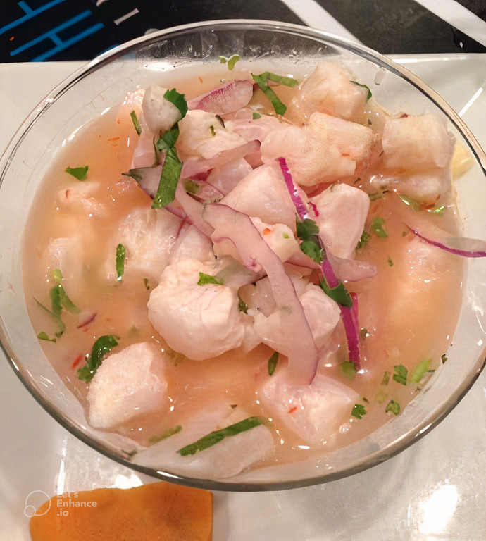
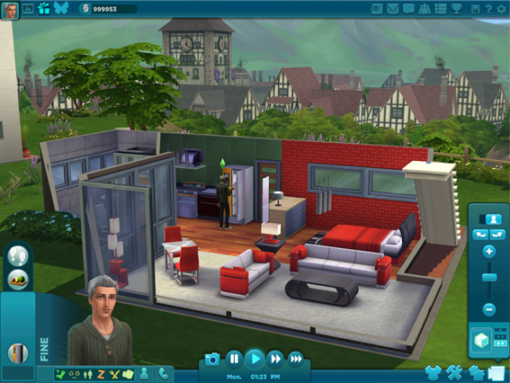
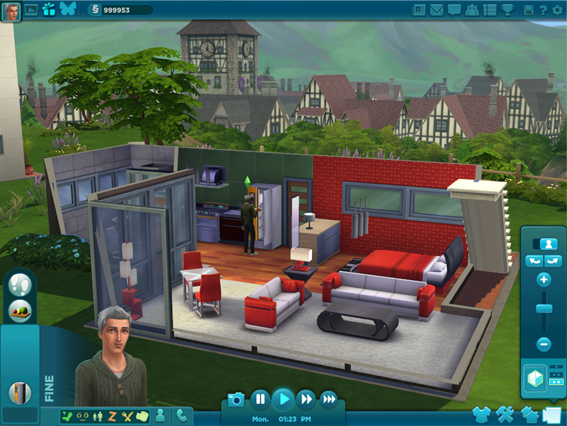

Gabs Reading Nook.

8:20 AM - Sometimes I forget that I am the only me in the world. There is small chance right now in my life to find someone smiliar to me and it kinda makes me sad to think about it. I Yes, I've found people with similar interests, music taste, humor, and one part of my personality but somehow it ends up not feeling right and the relationship never reaches a place I'd want it to which sucks but it happens. Finding people is hard. Socializing is hard. I'm slowly losing my social skills and going to a school where all the people are similar to their personalities just makes me feel like an odd one out.
8:45 AM - MY BIKE SUCKSS! It doesn't have that plastic protective piece over the crankset so whenever I pedal and I happen to wear loose fitting pants THE FUCKING PANT LEG GET CAUGHT IN THIS LITTLE METAL THING THAT STICK OUT AND RIPPPSS OFF A A HUGE PIECE OF FABRIC. I have about three pairs of pants that I can't wear anymore because of my bike ripping it up, so now whenever I bike I have to tuck in my pant leg into my sock or roll them up completely past the knee which IS UNNNCOMFORTABLEEEE. My bike sucks.


Tallarines Verdes w/carne
 This is a childhood favorite of mine, my mother would cook this Peruvian dish with Cuban skirt steak and recently I've been craving it like crazy. I want to share this one since its such a perfect simple meal to make (just takes some time).
This is a childhood favorite of mine, my mother would cook this Peruvian dish with Cuban skirt steak and recently I've been craving it like crazy. I want to share this one since its such a perfect simple meal to make (just takes some time).Ingredients for pasta
1 pound spaghetti2 tablespoons chopped shallots
3 garkuc ckives, chopped
2/3 cup toasted and roughly chopped walnuts
3 cups baby spinach
4 ounces cotija cheese slightly crumbled, plus more for garnish
3/4 evaporated milk
3 tablespoons extra virgin olive oil
3/4 teaspoon salt
1/2 teaspoon cracked black pepper
Ingredients for sour orange mojo
6 garlic cloves, peeled and chopped1 Scotch bonnet chile, stemmed, seeded and minced
1 to 2 teaspoons cumin seeds, toasted
1/2 teaspoon kosher salt
1/3 cup equal parts lime and orange juice or 1/3 cup sour orange juice
1 cup olive oil
2 teaspoons sherry vinegar
and some Freshly ground black pepper to taste
Ingredients for skirt steak
1 1/2 pounds skirt steak, trimmed1 cup red onion, finely minced
1 tablespoon flat leaf parsley, minced
Avocado Oil
2 teaspoons unsalted butter
1 lime, quartered
Instructions
1. Start by cooking your pasta al dente around 7 to 9 minutes making sure to stirr ocassionally. When ready drain and toss in a little olive oil and set aside.2. Begin by putting your chopped shallots, garlic, and walnuts into a food processor and pule until coarse crumbs are made. Add the spinach, basil, and cheese then contune to pulse.
3. With the processor running on low add the evaporated milk and oil. Seaon to your liking with salt and pepper and puree until smooth.
4. Pour the mixture into a large bowl and mix in your sphagetti and adjust the seaoning to your liking. Leave to the side and begin preping the steak.
1. Begin by placing olive oil into a small saucepan and place it over medium-low heat. Make sure while its warming up you do not let it get too hot, after a little place the salt, garlic, cumin, and Scotch bonnet into a mortar and beat them up a bit wtih the pestle if on hand.
2. Add the warm oil to the mortar and let the seasonings steep for 10 minutes or longer. Begin whisking in the juices and vinegar and season with pepper for taste.
3. Season the skirt steak with salt (or adobe like I would do) the same time you start to make the mojo. I recommend if you can to let the mojo meld overnight, (which reallly makes the steak super juicy and falvourful).
4. Give the mojo sauce a good shake or stir. Pour plenty of it over the skirt steak, making sure you get lots of peppers, garlic, and zesty juice in there. Let the steak soak up the flavors but don't leave it in the marinade for more than an hour. If you do, the marinade might overwhelm the taste of the beef, and the whole idea is to keep it nice.
5. While the steak is marinating, heat a pan over high heat and add a coat of oil around the pan and then add some red onions if you'd like. Moon cut is fine. Let them sear a bit but not become soft and translucent.Then remove and add in separate bowl.
6. Begin heating a large pan for the steak and have it set ober medium high heat. Cover the pan in oil and begin to let it get hot.
7. Drain the steaks of the marinade and pick off any stuck on garlic and pepper.
8. Add the butter to the pan and let the oil and butter merge into each other then begin to lay the steaks onto the pan/ Sear both sides of the steakas and cook until nice and caramelized.
9. After the steak is cooked to your liking you can take it out and place it on a plate and add some of the pans juice to it if you'd like.
10. Begin plating your sphagetti and if you'd like add a bit of the cheese on the top and then cut or just straight up add your steak to the plate.
Thats it! Now time to enjoy your amazinnngg meal mm mm mm
Ceviche
 If you're a fish lover you might love this dish. Another food from my childhood is Peruvian Ceviche, you can make it spicy or not depending if you'd like to add the Habanero pepper but I like both. The cooking for this is all from the acids forming a pH conditions to denature the fish protein networks, just like how heating would.
Ingredients
2 tsp Cilantro6 Garlic Cloves
2-3 sprigs of fresh cilantro
1 Habenero Pepper cut in half, deseed(optional)
8 Limes
1 Red Onion
Salt and Pepper
2 lbs Tilapia filets or or other firm white fish fillets, cubed
Instructions
1. Cut your fish into cubed pieces and place them into a bowl of cold water with a tablespoon of salt and refrigerate while preparing the onions and jucing the limes.2. Juice all limes and set them aside in a bowl and then cut thin the red onion in a moon shape and rinse the onions in cold water with 1/2 tablespoon of salt.
3. Now rinse the fish to remove all the salt and place the fish in a glass bowl with the onions, cilantro, and hot peppers (optional) and begin to pour the lime juice all over the ingredients. Spinkle just a bit of salt while mixing all the ingredients together and if you'd like, add some ice cubes to minimize the acidity.
4. Cover it and refrigerate for aroun 10 to fifteen minutes. 5. Remove the hotpeppers and then taste the ceviche and add any additional seasonings if needed.
Boom! You're done! You can even add fresh boiled corn or sweet potatoes to the ceviche and it adds more great flavor and textures to the dish. I hop eyou try this one out since its SOO GOOOOD!!
Jimmy Neutron and Children Games
 Okay I don’t know if it’s just me but does anyone else feel that children GameCube games for cartoons are incredibly long? Since the games are meant to challenge the young minds they are most often puzzle based. The thing is I realized that they can be so incredibly lonnngggg, I feel like they eventually lose their plot about five hours into gameplay since after awhile it goes back to endless puzzle solving. I must be the worst gamer especially at a young age cause I searched up the average game time FOR The Adventure of Jimmy Neutron JetFusion to complete the main missions and its totaled to FIVE HOURS and TWENTY-SEVEN MINUTES. IM SORRY? HOW? I remember little Gab playing that game for about five hours and being in a new area feeling no where near the finish line. I began to just play the games beginning until I would stop at a certain point of exhaustion and bored cause the scenario just lost it’s appeal and so did it’s gameplay. I remember being so sick of the puzzle concept over and over again that when I passed this jungle area and went into a Japanese area I just gave up and whenever I wanted to play the game I would create an entirely new save file just to relive the parts I was happy with, up to the point where I got pretty damn good on secret stashes and the maps layout. I do like all of the intricate details incorporated in the maps puzzles, they do add a certain pleasure and overall good feeling to the environment, it just doesn’t feel like same after awhile of doing SOO MANNNYY PUZZLESSSSS!!! I seriously forget what the whole purpose of all the crap I’m doing and then when I’m remember I’m like “Fuckkk thiisisss.” I seriously just have to STOP at a certain point and do something else. I really do like the feeling when I play the game since it’s a childhood favorite but I seriously don’t know if I’ll ever be able to finish it. I find it interesting though to see this continuous pattern in children games, it makes sense for all of them to be in similar layout but its INCREDIBLE that for ten years I haven’t beaten any of those games. The games being SpongeBob SquarePants Creature from the KrustyKrab (CRTKK) and Battle for Bikini Bottom (BFBB). It’s polled doe the gameplay for CFTKK to have an average of four hours and thirty six minutes and BFBB to have ten hours which honestly makes more since I remember getting to this area where there were MULTIPLE DOORS AND YOU HAD TO OPEN ALL OFF THEMMMM. It was a terrible feeling. I’m honestly more shocked over CFTKK since like the other games I repeatedly played it till a certain point so it felt longer than it should be but even then I played that game for nearly six hours and I got as far as Planktons dream of being chased by a Krabby Patty. It just got so borinnggg man like okay Spongebobs dream was cool and nice but Patricks was WAYY more better and then after that it being Planktons mid ass parkour dream was just such a turn off. I lovED the superhero comic feel for Patricks dream, it just seemed so fitting and engaging with all the colors, comic strip style, and nice chill music in the back. I don’t really know the storyline for that game either like I think its just a game of their dreams and stuff which is a cool idea it just got boring. It’s funny though cause I don’t even think I’ve finished another GameCube games I’ve owned and I sorta just did the same thing where I would play to a certain part and then new save and restart, games like StarWars : Bounty Hunter, Luigis Mansion, Metroid Prime, and Metal Gear Solid The Twin Snakes. Now talking about all these games I really want to play them soooooo badly and try to get them done. Hopefully later in life I will eventually finish them and close an important chapter of my childhood. I’d also like to say that I applaud the companies who make the children games challenging and full of puzzles, I hink it’s a great idea way better than finding them mindless bullshit they constantly play. I think the only reason I didn’t really finish or work through all of them was cause it eventually lost it’s appeal. I no longer cared towards the goal I was working for and everything was so fucking dull. I wasn’t excited anymore of completing puzzles or finding new areas and the continuous puzzle without going back to the story made it worse for me to get into. I wish I had more patience as a child with them and pushed through but I hope now that I’m an adult I can get them done.
Okay I don’t know if it’s just me but does anyone else feel that children GameCube games for cartoons are incredibly long? Since the games are meant to challenge the young minds they are most often puzzle based. The thing is I realized that they can be so incredibly lonnngggg, I feel like they eventually lose their plot about five hours into gameplay since after awhile it goes back to endless puzzle solving. I must be the worst gamer especially at a young age cause I searched up the average game time FOR The Adventure of Jimmy Neutron JetFusion to complete the main missions and its totaled to FIVE HOURS and TWENTY-SEVEN MINUTES. IM SORRY? HOW? I remember little Gab playing that game for about five hours and being in a new area feeling no where near the finish line. I began to just play the games beginning until I would stop at a certain point of exhaustion and bored cause the scenario just lost it’s appeal and so did it’s gameplay. I remember being so sick of the puzzle concept over and over again that when I passed this jungle area and went into a Japanese area I just gave up and whenever I wanted to play the game I would create an entirely new save file just to relive the parts I was happy with, up to the point where I got pretty damn good on secret stashes and the maps layout. I do like all of the intricate details incorporated in the maps puzzles, they do add a certain pleasure and overall good feeling to the environment, it just doesn’t feel like same after awhile of doing SOO MANNNYY PUZZLESSSSS!!! I seriously forget what the whole purpose of all the crap I’m doing and then when I’m remember I’m like “Fuckkk thiisisss.” I seriously just have to STOP at a certain point and do something else. I really do like the feeling when I play the game since it’s a childhood favorite but I seriously don’t know if I’ll ever be able to finish it. I find it interesting though to see this continuous pattern in children games, it makes sense for all of them to be in similar layout but its INCREDIBLE that for ten years I haven’t beaten any of those games. The games being SpongeBob SquarePants Creature from the KrustyKrab (CRTKK) and Battle for Bikini Bottom (BFBB). It’s polled doe the gameplay for CFTKK to have an average of four hours and thirty six minutes and BFBB to have ten hours which honestly makes more since I remember getting to this area where there were MULTIPLE DOORS AND YOU HAD TO OPEN ALL OFF THEMMMM. It was a terrible feeling. I’m honestly more shocked over CFTKK since like the other games I repeatedly played it till a certain point so it felt longer than it should be but even then I played that game for nearly six hours and I got as far as Planktons dream of being chased by a Krabby Patty. It just got so borinnggg man like okay Spongebobs dream was cool and nice but Patricks was WAYY more better and then after that it being Planktons mid ass parkour dream was just such a turn off. I lovED the superhero comic feel for Patricks dream, it just seemed so fitting and engaging with all the colors, comic strip style, and nice chill music in the back. I don’t really know the storyline for that game either like I think its just a game of their dreams and stuff which is a cool idea it just got boring. It’s funny though cause I don’t even think I’ve finished another GameCube games I’ve owned and I sorta just did the same thing where I would play to a certain part and then new save and restart, games like StarWars : Bounty Hunter, Luigis Mansion, Metroid Prime, and Metal Gear Solid The Twin Snakes. Now talking about all these games I really want to play them soooooo badly and try to get them done. Hopefully later in life I will eventually finish them and close an important chapter of my childhood. I’d also like to say that I applaud the companies who make the children games challenging and full of puzzles, I hink it’s a great idea way better than finding them mindless bullshit they constantly play. I think the only reason I didn’t really finish or work through all of them was cause it eventually lost it’s appeal. I no longer cared towards the goal I was working for and everything was so fucking dull. I wasn’t excited anymore of completing puzzles or finding new areas and the continuous puzzle without going back to the story made it worse for me to get into. I wish I had more patience as a child with them and pushed through but I hope now that I’m an adult I can get them done.
The Sims Discussion

The Sims has played a significant role in my life, and it holds a special place in my heart because of the connection it brings between me and my sister. Playing the game not only brings me happiness but also a sense of nostalgia, as she introduced it to me at such a young age and whenever I play I can remember watching her play. Thats why I am so opinionated and have such a strong feeling to what the Sims has turne dinto. I want to try my best to give my full complete opinion on the four Sims games, talk and compare then explain the bits and pieces as to what I love in the game. It’s going to be long and probably boring rambling but this is for me I mean all of the content in the page is for me so sorry if isn’t something that excites you but I GOTTA TALK ABOUT IT SOMEWHERE! So up until maybe 2017? I had played just mostly Sims 2 and 3 (and barely any 1 since I couldn’t get into it) but after awhile of the Sims 4 being released I found a good discount for the game and decided to go and buy it but was met with disappointment. Not only over the fact that the game wasn't like how the others were before, or the fact that it felt so bland but also that they priced it to be $60 dollars AND TERRIBLE. I was surprised to see that we were stripped from all of the simple details, maps, and traits and overall personality that we got from the other games. I want to talk about the Sims 2 and 3 characteristics that really popped out and made it that Sims feel. It’s a vERYY long list but I feel it to be important that I just point it out cause like come on Sims 4 sucks and we need to be reminded of all the attention to detail put in the earlier games. It’ll be a list so you can just try to quickly skim and scroll down until I begin speaking abt them more in depth but I’m going to start with 2 then 3 and maybe 4. I’d also like to point out that some of the details I will be talking about are from Packs and Stuffs not just vanilla with that in mind let the list commence.
The Sims 2
- Acknowledging fish tanks same when toddlers begin to walk
- sims can ask for scholarships
- When raking leaves in the rain the option of setting them on fire isn’t available
- Sims have crafting stations
- Sims will taunt other Sims when playing video games
- Sims can fake call in sick and while the interaction happens they will laugh and fake cough but if caught they can be demoted and affects their work performance
- If a Sim answers the phone meant for another Sim in the household, that Sim can call down the other and get the phone from them
- Teenagers can hangout on the swing sets while dangling around talking
- Depending on the cars model the suspension and animation differs when a Sim enters the car
- Sims can gift other Sims a gift and depending on the price of that gift the Sim will react differently
- After gossiping the Sims will express a look of shocked after hearing a rumor
- Sims can be scared of going off a diving board and stop attempting to but they can also be encouraged by another Sim that they can do it, prompting them to jump off
- A Sim can attempt to run out of a dinner bill but if caught they will have a negative impact with the staff and have to pay for the bill
- Grouchy Sims will throw footballs incredibly hard at another Sim
- Sims can spy on other Sims with a telescope but if caught they will have a negative impact, fight, and be embarrassed
- You are able to tip service Sims
- Sims are able to watch the clouds or star gaze and if with a romantic partner they can cuddle under the star and clouds
- Toddles when not supervised can crawl out of their cribs and mess around
- Toddlers have a much different playing style than children and can play in the toilet
- Children can stand on older Sims feet and hold hands with the Sims while playing
- Depending on what grade a Sim got in school that day, when exiting the bus they will react negatively or positively
- Toddlers if feeling mischievous will take bottles from other toddler Sims
- If the relationship between a teenager and their family is bad it can cause that teen to run away and might never return
- When a Sim is cooking they use the cupboards and drawers around them in the animation as well as machinery
- Sims have the chance to hangout in cars, listen to music, drive around, and woohoo
- Sims have the option to proposal while sitting down
- Sims have the option to grocery shop in person and online but they are allowed to PHYSCIALLY be in the store, they can open up refrigerators and fill their baskets then checkout
- Clothing shops are also available and same with a Gaming Store that you are able to walk into
- You can access memories of Sims
- There's an animation detail for when a Sim switches games from their computer
- If a Sim goes to bed with low needs then they will have nightmares
- The bus driver waves at the children entering
- Members of a Greek house have the option of sleeping on the ground
- Sims can accidentally fall off hammocks when trying to lay in them they can also Woohoo in them
- Children have a different typing animation than adults
- Pets can react to their reflection an depending on their personalities their reaction can differ
- Children can play a prank buy generating static electricity from a rug and then shocking the Sim
- Dogs can knock over garbage cans and eat from them then will throw up afterwards
- Sims don’t like it when other Sims call them at night and can impact the relationship
- Playful teens can slide down the banister even with a baby in their hands
- You are able to release the robber from a cop car after they arrested trying to rob you
- Toddlers can hug each other
- School can be cancelled on snow days
- Aggressive dogs will chase the mail carrier
- Collars provide information on the pets owner
- While playing fetch with a dog the Sim will fake throw the item
- Sims can take their pets out on jobs
- Unique flirting animations
- Two Sims an fix up a car together
- Multiple animated pots on the stove
The Sims 3
- Singing while fishing
- Sims can be frustrated when on the computer suggesting its not complying to them
- Workaholics can work from home for hours
- Hydrophobia trait will show Sims complaining before getting into a pool or hot tub
- Sims can do romantic things in the theater or City Hall
- When a Sim eats garlic you will visually see their stinky breath and they can brush their teeth to get rid of it
- When a clumsy Sim grills they can accidentally drop food on the floor which then they will proceed to look around and then pick the food off the ground and put it back on the grill
- Sims can eat on corners on bathtubs or toilets if all other seats are taken
- Sims can ask each other about their days or how they slept
- You can adjust volumes on radios and tvs
- You can buy a rubber duck, candles, or bubble bath solution and place it on the bath so your Sims can use them and have a moodlet depending on which one you use
- Sims can fail when performing a sing-a-gram
- Sims can destroy snow angels
- Condensation also occurs during winter and we are able to see the Sims breath
- After carving a pumpkin the Sim will keep pumpkin seeds
- Sims can destroy carved pumpkins but if lit they might catch on fire
- Sims can graffiti
- If a child has a teddy bear in their inventory then it will bring a positive moodlet when they go to bed
- When you stock your bookshelf's they noticeably get filled
- When a Sim is on their phone and they drop it their screen will crack
- When having a picnic ants can come in and take food from the basket
- Children can copy other Sims finished homework
- Sims can look through other Sims windows granting you access to a full view of their bottom floor but if seen will have negative relationship and shooed away
- Toddlers can play inside toy boxes
- You can customize your door bells sound after lvl 3 handy skill
- Sims have different animated sitting positions
- If a Sim is watching tv and your turn it off they will visibly become upset
- Elderly or lazy dogs will eat laying down
- Sims can confess that they have cheated
- Sims can have competitive breath holding under water
- You can read WITH toddlers in Sims 3 but in 2 and 4 its to them. Toddlers can also flip the pages.
- Newspapers can give information on weekly events, discounted classes, and the weather
- When a Sim skinny dips another Sim can steal their clothes
- Sims can ask other Sims how their day was, how they slept, and so on
- When a mail carrier is chased by a dog, you will see mail flying out of the carriers bag.
- If a minor hasn’t gone to school adult Sims can tell them to
- Sims can tell their children to go to bed
- When in a hot tub if a Sim has a stereo in their inventory it’ll automatically be placed on the corners of the tub
- Mail carriers can angerly deliver mail by slamming it on the ground near your mail box
- Sims can go through middle life crisis and get therapy for it
- Sims are annoyed by loud machinery
With what I wanted listed lets get into the nitty gritty of it. I wanna start off with saying the Sims 4 lacks all of the details provided. Its a Sims game that doesn't FEEL like a Sims game. It lacks all trait and personality from its previous games, serving as a completely bland I guess beginners game to the franchise. I say beginners since it's so easy to only control your household and get money. Lets talking about how they launched the game and how despite its initial promises of improved Sims it still lacked its immersion even with the "improvements". They were really selling and focusing on the Sims emotions and how intricate they have become with reactions and allow the player to see emotional change in real time this system is incredibly flawed. They completely destroyed the moodlet layout and I swear to fuck I get whiplash from how constant their emotions DRASTICALLY change over very small events. It can be rain, them painting, or a argument between other Sims but without fail their mood will switch to whatever small thing is causing them problems or whatever moods they came up. I like how they had added moodlets to mesh into other moodlets and their emotions are a combined reaction to these meshed moods, thats a fine idea but what I just cant get over is the problem that this new emotion feature is taking over their Sims personality entirely. They now have different reactions on the new emotion they are feeling and their conversations or interactions with others is constantly different from how they would converse without all the frantic chnages of emotions. Their whole personality and actions are now based on whatever two second emotion they felt and it doesn’t come off as realistic. It’s never consistent and they can act differently all the time. I can kinda see what approach they were taking when creating the emotions it’s just don’t make it so that every small moodlet completely overcomes the others. In the Sims 3 we see how a Sim can have a numerous amount of moodlets and depending on the impact of negative and positive it affects their mood all together. One singular bad one whether it be a foul odor or ruined food doesn’t overshadow the amount of positives, and I feel that system was completely abandoned when making 4. Even though we are told the Sims 4 put in all their effort on emotions and how different their animations are based on what they are feeling, it somehow turned out half baked. They completely fucked up the personality customization since now its three major ones and an added one after you chose your career.. like wow three and an extra one thats so limiting to previous games. We can no longer have in depth customization with our Sims and that’s such a huge importance to the Sims LIKE YOU CAN’T NOT HAVE THAT. With the talk of me saying the games half baked I’d like to shine some importance and a popular theory as to why, I’m gonna try my best to summarize but it’s fairly easy to grasp lol.
 So lets go back to the first Sims multiplayer, The Sims Online. It was fairly popular for a while with a whopping 100,000 gamers visiting to speak with other Sims lovers but a decline would soon hit and The Sims Online would lose its popularity very quickly. Seeing that the game took a lot of money to make (some say a million I don’t really know about that) it was eventually shut down after four years and seen as a failed project that wasn’t pulling in any profits to recover the games budget. With the Sims 3 coming out it brought back the idea of The Sims Online so EA and Maxis began developing a new multiplayer game called Olympus. Now some of Olympus’s gameplay and details were leaked and shown later on but we are able to see the drastic similarities from 4. We see the 2d blacked out map, the Sims pull and push body customization, Sims new graphics, even similarities in the fashion, they all were very identical to 4.  They created it to where online players would wear a blue plumbob indicating a human was controlling that Sim and green regulars plumbobs were NPCS. Maxis and EA were making their fourth installment of the Sims a multiplayer game, so why the change? They were significantly far into the making of the game and honestly almost ready to launch but I don’t know if you guys remember or were involved at the time but during 2013 the new SimsCity game launched and fans were pissed. There were multiple features that made the game hard to play and eventually letters and reports were made to the point where EA had allowed people who bought SimsCity to chose something of similar value in the market place. EA was in the spotlight and everything they received was negative so with them having such a negative response it is believed that EA had completely scrapped the idea of a multiplayer game, and of course maybe there were other details for this but honestly EA was most likely super terrified to come out with another shitty game after the catastrophe of SimsCity 2013. With EA out of a game they then spend the next year trying to create what we now know as the Sims 4. They keep their marketing vague and mysterious since they didn’t have anything to show for marketing and eventually talk about it in Europe explaining all the “interesting” and “detailed” new emotions of the Sims. I really believe this theory to be accurate especially with the timing of everything and the fact that THERES FILES ON SIMS 4 CALLED OLYMPUS! With this knowledge it makes more sense to why the Sims 4 doesn’t seem polished or up to par with any of the other games. It was rushed, certain features weren’t added until later on, and felt like a clucky piece of shit with no feeling of the other Sims games. So what does every company do when they had a failing project, scrap a project, and rebuild a completely other one? They price the game at an extremely high price and then create multiple fucking DLCS that ROUND UP TO 1,000 DOLLARS. Like they wanted to milk this as much as they can and not put in any effort to fix the game itself. The DLCS genuinely make me pissed like I understand they add furniture options and crap but making it so that you get cats and dogs for $40.. really? Oh and if you want horses also $40, want some work experiences? $40 like screw you how the fuck do you make Pets without all the cute smaller animals and price it to be $40? In 2 and 3 they were $20 thank god but even now they won’t drop the prices of these older games DLCS, how fucking greedy can you be. They eventually drop the prices of 4 so they can lure in newcomers and let them piss their money away on creating a “better” game cause of how fucking BLAND THE BASE GAME IS, LIKE WOW. Talking about it infuriates me since ITS JUST SUCH A TERRIBLE GAME AD EA SUCKS MAD DICK DOING ALL OF THIS SHIT BEING GREEDY SLUTS. It’s so sad to see the decline of such a cherished and loved franchise around the world turn into a money-grabbing hot pile of garbage. I’m seriously very hesitant on how 5 will be especially after hearing that the game will be continuously worked on along side 4. I can only hope for the best.
So lets go back to the first Sims multiplayer, The Sims Online. It was fairly popular for a while with a whopping 100,000 gamers visiting to speak with other Sims lovers but a decline would soon hit and The Sims Online would lose its popularity very quickly. Seeing that the game took a lot of money to make (some say a million I don’t really know about that) it was eventually shut down after four years and seen as a failed project that wasn’t pulling in any profits to recover the games budget. With the Sims 3 coming out it brought back the idea of The Sims Online so EA and Maxis began developing a new multiplayer game called Olympus. Now some of Olympus’s gameplay and details were leaked and shown later on but we are able to see the drastic similarities from 4. We see the 2d blacked out map, the Sims pull and push body customization, Sims new graphics, even similarities in the fashion, they all were very identical to 4.  They created it to where online players would wear a blue plumbob indicating a human was controlling that Sim and green regulars plumbobs were NPCS. Maxis and EA were making their fourth installment of the Sims a multiplayer game, so why the change? They were significantly far into the making of the game and honestly almost ready to launch but I don’t know if you guys remember or were involved at the time but during 2013 the new SimsCity game launched and fans were pissed. There were multiple features that made the game hard to play and eventually letters and reports were made to the point where EA had allowed people who bought SimsCity to chose something of similar value in the market place. EA was in the spotlight and everything they received was negative so with them having such a negative response it is believed that EA had completely scrapped the idea of a multiplayer game, and of course maybe there were other details for this but honestly EA was most likely super terrified to come out with another shitty game after the catastrophe of SimsCity 2013. With EA out of a game they then spend the next year trying to create what we now know as the Sims 4. They keep their marketing vague and mysterious since they didn’t have anything to show for marketing and eventually talk about it in Europe explaining all the “interesting” and “detailed” new emotions of the Sims. I really believe this theory to be accurate especially with the timing of everything and the fact that THERES FILES ON SIMS 4 CALLED OLYMPUS! With this knowledge it makes more sense to why the Sims 4 doesn’t seem polished or up to par with any of the other games. It was rushed, certain features weren’t added until later on, and felt like a clucky piece of shit with no feeling of the other Sims games. So what does every company do when they had a failing project, scrap a project, and rebuild a completely other one? They price the game at an extremely high price and then create multiple fucking DLCS that ROUND UP TO 1,000 DOLLARS. Like they wanted to milk this as much as they can and not put in any effort to fix the game itself. The DLCS genuinely make me pissed like I understand they add furniture options and crap but making it so that you get cats and dogs for $40.. really? Oh and if you want horses also $40, want some work experiences? $40 like screw you how the fuck do you make Pets without all the cute smaller animals and price it to be $40? In 2 and 3 they were $20 thank god but even now they won’t drop the prices of these older games DLCS, how fucking greedy can you be. They eventually drop the prices of 4 so they can lure in newcomers and let them piss their money away on creating a “better” game cause of how fucking BLAND THE BASE GAME IS, LIKE WOW. Talking about it infuriates me since ITS JUST SUCH A TERRIBLE GAME AD EA SUCKS MAD DICK DOING ALL OF THIS SHIT BEING GREEDY SLUTS. It’s so sad to see the decline of such a cherished and loved franchise around the world turn into a money-grabbing hot pile of garbage. I’m seriously very hesitant on how 5 will be especially after hearing that the game will be continuously worked on along side 4. I can only hope for the best.With that depressing news out of the way lets talk about Sims 2 and 3, 3 being my absolute favorite. I actually redownloaded 2 just to have a better perspective on what to write about, how it made me feel, and the details of it all. When booting it up I was SLAMMED into a wave of nostalgia, from seeing the games video opening, to hearing the music and seeing the layout of all the maps, it had been so long that I was giggling and kicking my feet teehee. I soon forgot hard that game is to both keep up a social life and work life while also taking care of your Sims and all their needs. I ended up using motherlode cheats and just playing to socialize cause it was seriously becoming too hard and I wanted to have a good time, not challenge my self. I found the fears and wants to be interesting since it wasn’t likes and dislikes like in 3, it was just fears and wants having to do with their personality and the career choice chosen but the meter for it was sorta there for me? I don’t know I didn’t find any other reason for it to be there unless I missed it. I love seeing the traits option again and them having to do with horoscopes and certain points to certain characteristics. Another enjoyable factor I found was the atmosphere of the sims house or just anywhere really. It was so comforting to just hear the birds outside, crickets, the wind, fridge murmuring, fish tank blubbing, watching the Sims play games or just look around in shops was such an amazing detail. All the small details in how they interact with the surroundings or sounds really brought me back. It was just so nice to turn of the HUD and watch the Sims be Sims. One of the main problems I had with the game was how short a Sims life is, it all felt very rushed and you had to plan meticulously to get what you wanted done at certain ages and it just really sucked to see that but I’m glad in 3 they added the ability to change the Sims life span allowing you to play the game any way you’d like to play it. There was a new sense of freedom when 3 was made with its personality customizability, your ability to run or jog to destinations whiteout having load in screens, the ability to buy and profit off buildings just really added a lot. It still had its great atmosphere but I don’t know 2 was still different in its own way. 3 definitely had its most effect HUD layout in a simple easy used design, it was most comfortable than all the others. You are now actually able to have a work life balance without having to sacrificing anything, there is added difficulty when having multiple household members but it’s still manageable. I love the added interaction with your jobs where you can study to improve work performance and the added skill books to improve many different skills. Having the player chose how they would like their Sim to work either at their job or school adds more realistic gameplay as well. I only wish that we are able to see and be inside the shops, buildings, and diners but you sadly can’t have everything.
In conclusion, my journey through The Sims series has been a rollercoaster of nostalgia, frustration, and genuine affection. My love for the franchise remains deeply rooted in the earlier installments—especially The Sims 2 and 3. Rediscovering the magic of The Sims 2, I was flooded with waves of pure bliss from the familiar sights and sounds just transported me back to an important part of my childhood. Despite the hurdles and the occasional need for cheat codes, the game's unique atmosphere and attention to detail left an huge dent mark on my gaming experience. Transitioning to The Sims 3, I found myself pulled in even more with the newfound freedom it offered. The range of customizability, improved HUD layout, and the ability to seamlessly explore the world without load screens were ABSOLUTE GAMEEE CHANGERS. The added realism in work life balance, skill improvement, and the option to alter the Sims' lifespan really just added so much. With this said I can only hope that 5 will be good and pray that people who were introduced to 4 are then introduced to 3 and 2 eventually leaving 4 cause FUCK 4. Thats all (ෆ˙ᵕ˙ෆ)♡